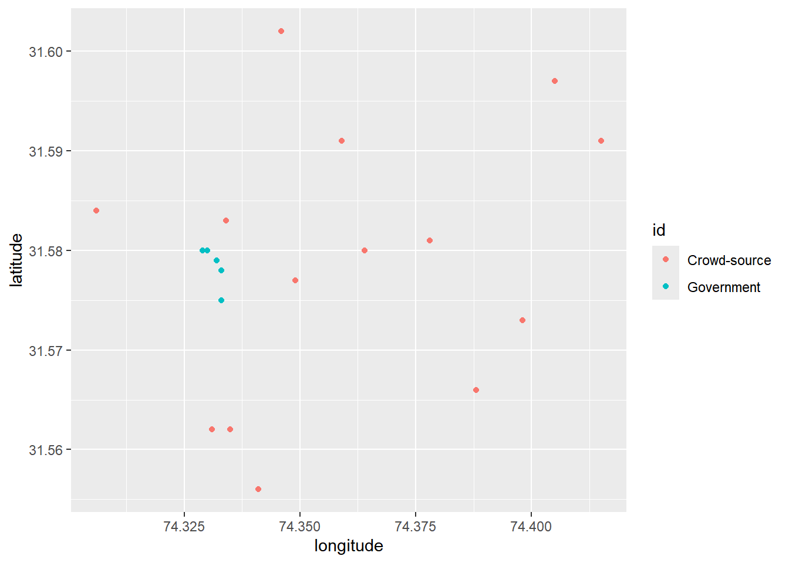

crowdsourced <- readRDS(file.path("data", "airpol-PK-crowdsourced.RDS"))
govt <- readRDS(file.path("data", "airpol-PK-govt.RDS"))EDS 222: Homework 1
Background
(The case study in this exercise is based on reality, but does not include actual observational data.)
In this exercise we will look at a case study concerning air quality in South Asia. The World Health Organization estimates that air pollution kills an estimated seven million people per year, due to its effects on the cardiovascular and respiratory systems. Out of the 40 most polluted cities in the world, South Asia is home to 37, and Pakistan was ranked to contain the second most air pollution in the world in 2020 (IQAIR, 2020). In 2019, Lahore, Pakistan was the 12th most polluted city in the world, exposing a population of 11.1 million people to increased mortality and morbidity risks.
In this exercise, you are given two datasets from Lahore, Pakistan and are asked to compare the two different data collection strategies from this city. These data are:
Crowd-sourced data from air quality monitors located in people’s homes. These data are voluntarily collected by individual households who choose to install a monitor in their home and upload their data for public access.
Official government data from monitors installed by government officials at selected locations across Lahore. There have been reports that government officials strategically locate monitors in locations with cleaner air in order to mitigate domestic and international pressure to clean up the air.
Note
All data for EDS 222 will be stored on the Taylor server, in the shared /courses/eds-222/data/ directory. Please see material from EDS 214 on how to access and retrieve data from Taylor. These data are small; all compute can be handled locally. Thanks to Bren PhD student Fatiq Nadeem for assembling these data!
In answering the following questions, please consider the lecture content from class on sampling strategies, as well as the material in Chapter 2 of Introduction to Modern Statistics. Include in your submission your version of this file “eds-222-hw1.qmd” and the rendered HTML output, each containing complete answers to all questions as well as the associated code. Questions with answers unsupported by the code will be marked incomplete. Showing your work this way will help you develop the habit of creating reproducible code.
Assessment
Question 1
Load the data from each source and label it as crowdsourced and govt accordingly. For example:
Warning
There’s an implicit assumption about file organization in the code above. What is it? How can you make the code work?
- The code assumes that the data files are in a folder called “data” located in our current working directory.
- These dataframes have one row per pollution observation. How many pollution records are in each dataset?
The crowdsourced data frame has 5,488 pollution records
The govt data frame has 1,960 entries
library(tidyverse)── Attaching core tidyverse packages ──────────────────────── tidyverse 2.0.0 ──
✔ dplyr 1.1.4 ✔ readr 2.1.5
✔ forcats 1.0.0 ✔ stringr 1.5.1
✔ ggplot2 3.5.1 ✔ tibble 3.2.1
✔ lubridate 1.9.3 ✔ tidyr 1.3.1
✔ purrr 1.0.2
── Conflicts ────────────────────────────────────────── tidyverse_conflicts() ──
✖ dplyr::filter() masks stats::filter()
✖ dplyr::lag() masks stats::lag()
ℹ Use the conflicted package (<http://conflicted.r-lib.org/>) to force all conflicts to become errorsview(crowdsourced)
view(govt)- Each monitor is located at a unique latitude and longitude location. How many unique monitors are in each dataset?
- There are fourteen unique monitors in the crowdsourced dataframe and five unique monitors in the govt dataframe. I found this by using mutate to create a new column with unique id’s grouped by longitude and latitude pairs. I then used the unique function to view all the unique id’s and identified the highest number.
column_id <- crowdsourced %>%
group_by(latitude,
longitude) %>%
mutate(id = cur_group_id())
unique(column_id$id) [1] 4 14 5 3 12 2 13 1 6 8 9 10 7 11column_id_gov <- govt %>%
group_by(latitude,
longitude) %>%
mutate(id = cur_group_id())
unique(column_id_gov$id)[1] 2 4 1 3 5
Tip
group_by(longitude,latitude) and cur_group_id() in dplyr will help in creating a unique identifier for each (longitude, latitude) pair.
Question 2
The goal of pollution monitoring in Lahore is to measure the average pollution conditions across the city.
What is the population in this setting? Please be precise.
- The population that we’re interested in the average air pollution throughout the entire city of Lahore between November 2018 and November 2019.
What are the samples in this setting? Please be precise.
- The samples are the average air pollution measurements we have taken. In this case we have two samples: crowdsourced and government, both taken from 10/4/18-10/30/19.
These samples were not randomly collected from across locations in Lahore. Given the sampling approaches described above, discuss possible biases that may enter when we use these samples to construct estimates of population parameters.
- The crowd-sourced data was collected from people who voluntarily elected to have quality monitors in their homes. The people who volunteered for the study might have similar demographics like income, race, or education. These characteristics bias our data and become issues when they’re correlated with our variable in question: air quality. For example, clean air is often positively correlated with income; if we want average air quality throughout the city but we only sampled air quality from wealthy households, our data would yield results for only the cleanest spots in the city rather than the entire city as a whole, and our results would be cleaner than reality.
- The government data was collected from non-random locations across Lahore. If the government chooses only clean locations, but treats it as representative of the whole city, our results will be cleaner than reality. Also, our data could be skewed by sampling only where government officials have access to, potentially excluding private land from sampling. This could create another bias pushing our results further away from reality.
Question 3
- For both the government data and the crowd-sourced data, report the sample mean, sample minimum, and sample maximum value of PM 2.5 (measured in \(\mu g/m^3\)).
For the crowd-sourced data, the mean is 70.2, minimum is 20.0, and maximum is 120.0
For the government data, the mean is 39.65, minimum is 15.0, and maximum is 65.0
summary(crowdsourced)date PM longitude latitude Min. :2018-11-04 Min. : 20.0 Min. :74.31 Min. :31.56 1st Qu.:2019-02-09 1st Qu.: 45.0 1st Qu.:74.33 1st Qu.:31.57 Median :2019-05-18 Median : 71.0 Median :74.35 Median :31.58 Mean :2019-05-18 Mean : 70.2 Mean :74.36 Mean :31.58 3rd Qu.:2019-08-24 3rd Qu.: 95.0 3rd Qu.:74.39 3rd Qu.:31.59 Max. :2019-11-30 Max. :120.0 Max. :74.42 Max. :31.60summary(govt)date PM latitude longitude Min. :2018-11-04 Min. :15.00 Min. :31.57 Min. :74.33 1st Qu.:2019-02-09 1st Qu.:27.00 1st Qu.:31.58 1st Qu.:74.33 Median :2019-05-18 Median :39.00 Median :31.58 Median :74.33 Mean :2019-05-18 Mean :39.65 Mean :31.58 Mean :74.33 3rd Qu.:2019-08-24 3rd Qu.:53.00 3rd Qu.:31.58 3rd Qu.:74.33 Max. :2019-11-30 Max. :65.00 Max. :31.58 Max. :74.33#create a table using the function summarise pm_min, pm_max, pm_mean
- Discuss any key differences that you see between these two samples.
Crowd-sourced data has a higher range (20 - 120) than government data (15-65), and a higher mean of 70.2 compared to 39.65. The quartiles for the crowd-sourced data are all higher than the government data, suggesting greater overall PM in crowd-sourced data.
- Are the differences in mean pollution as expected, given what we know about the sampling strategies?
Yes! We would expect to see the government sites with cleaner air (less PM) than crowd-sourced sites because government officials pick clean areas to sample. Compared to the government data, the crowd sourced data contains dirtier air quality, which is to be expected because these data are taken from a wider range of locations and probably closer to the city’s actual mean.
Question 4
Use the location of the air pollution stations for both of the sampling strategies to generate a map showing locations of each observation. Color the two samples with different colors to highlight how each sample obtains measurements from different parts of the city.
crowdsourced_id <- crowdsourced %>%
mutate(id = "Crowd-source")
govt_id <- govt %>% mutate(id = "Government")
both <- rbind(crowdsourced_id, govt_id)
sample_map <- ggplot(both, aes(longitude, latitude, color = id))+
geom_point()
print(sample_map)
Tip
longitude indicates location in the x-direction, while latitude indicates location in the y-direction. With ggplot2 this should be nothing fancy. We’ll do more spatial data in R later in the course.
Question 5
The local newspaper in Pakistan, Dawn, claims that the government is misreporting the air pollution levels in Lahore. Do the locations of monitors in question 4, relative to crowd-sourced monitors, suggest anything about a possible political bias?
Yes, the clumped distribution of monitor locations and low number of monitors suggest that the government is misrepresenting air pollution in Lahore. The government is misleading the public by sampling air-quality only from a localized, clean area and saying that their results are representative of the city as a whole.
Question 6
Given the recent corruption in air quality reporting, the Prime Minister of Pakistan has hired an independent body of environmental data scientists to create an unbiased estimate of the mean PM 2.5 across Lahore using some combination of both government stations and crowd sourced observations.
NASA’s satellite data indicates that the average PM across Lahore is 89.2 \(\mu g/m^3\). Since this is the most objective estimate of population-level PM 2.5 available, your goal is to match this mean as closely as possible by creating a new ground-level monitoring sample that draws on both the government and crowd-sourced samples.
Question 6.1
First, generate a random sample of size \(n=1000\) air pollution records by (i) pooling observations across the government and the crowd-sourced data; and (ii) drawing observations at random from this pooled sample.
crowdsourced_id <- crowdsourced %>%
mutate(id = "Crowd-source")
govt_id <- govt %>%
mutate(id = "Government")
sample_both <- rbind(crowdsourced_id,
govt_id)
sample_both_data <- sample_n(sample_both,
1000)
summary(sample_both_data) date PM longitude latitude
Min. :2018-11-05 Min. : 15.00 Min. :74.31 Min. :31.56
1st Qu.:2019-02-07 1st Qu.: 38.00 1st Qu.:74.33 1st Qu.:31.57
Median :2019-05-17 Median : 59.00 Median :74.34 Median :31.58
Mean :2019-05-19 Mean : 62.48 Mean :74.35 Mean :31.58
3rd Qu.:2019-08-28 3rd Qu.: 87.00 3rd Qu.:74.38 3rd Qu.:31.58
Max. :2019-11-30 Max. :120.00 Max. :74.42 Max. :31.60
id
Length:1000
Class :character
Mode :character
Tip
bind_rows() may be helpful.
Second, create a stratified random sample. Do so by (i) stratifying your pooled data-set into strata of 0.01 degrees of latitude, and (ii) randomly sampling 200 air pollution observations from each stratum.
sample_both$latitude_strata <- cut(sample_both$latitude,
breaks = seq(min(sample_both$latitude),
max(sample_both$latitude),
by = 0.01), include.lowest = TRUE)
strat_both <- sample_both %>%
group_by(latitude_strata) %>%
sample_n(size = 200)
summary(strat_both) date PM longitude latitude
Min. :2018-11-04 Min. : 15.00 Min. :74.31 Min. :31.56
1st Qu.:2019-02-06 1st Qu.: 39.00 1st Qu.:74.33 1st Qu.:31.57
Median :2019-05-09 Median : 60.00 Median :74.36 Median :31.58
Mean :2019-05-14 Mean : 64.05 Mean :74.36 Mean :31.58
3rd Qu.:2019-08-25 3rd Qu.: 90.00 3rd Qu.:74.40 3rd Qu.:31.59
Max. :2019-11-30 Max. :120.00 Max. :74.42 Max. :31.60
id latitude_strata
Length:1000 [31.56,31.57]:200
Class :character (31.57,31.58]:200
Mode :character (31.58,31.59]:200
(31.59,31.6] :200
NA's :200
Question 6.2
Compare estimated means of PM 2.5 for each sampling strategy to the NASA estimate of 89.2 \(\mu g/m^3\). Which sample seems to match the satellite data best? What would you recommend the Prime Minister do? Does your proposed sampling strategy rely more on government or on crowd-sourced data? Why might that be the case?
The mean PM for the stratified sample was closer to the NASA estimate with 64.36 \(\mu g/m^3\) compared to the random sample of 61.84 \(\mu g/m^3\). I would recommend the Prime Minister to use the NASA estimates because it is the most objective measure of air-quality in the city, and the data is publicly available. If that’s not possible, I would reccommend that the Prime Minister uses a stratified random sample to assess the data they currently have because it gave the closest value to the NASA mean, and it likely relies less on biased government data.
In our stratified sample, entries of government data are incorporated at a proportion lower than it is in the random sample. When we stratify by 0.01 degrees of latitude, we have five total categories of latitude. This means that all the values from any one strata make up exactly 20% of the total entries in our sample. Because the government data is clustered in the same strata (latitude), a maximum of 20% government data will be incorporated into our pulled sample. In a random sample of our data, government entries account for about 27% of our data, which means that on average 27% of the sample we pull from our parent data will be government entries.
Less government data likely helps the accuracy of our sample because the government monitors only measure air-quality in a highly localized area. Because our goal is to measure the average air-quality in the city, having data that incorporates a larger spread of locations helps us achieve a more realistic average that is less biased by any one place.